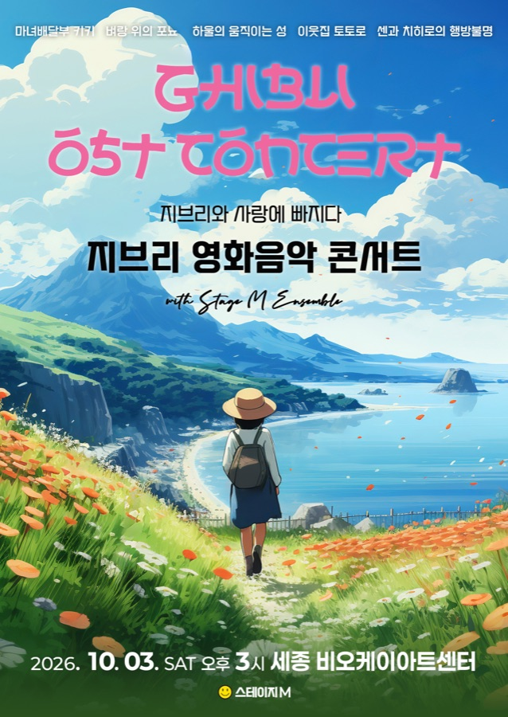
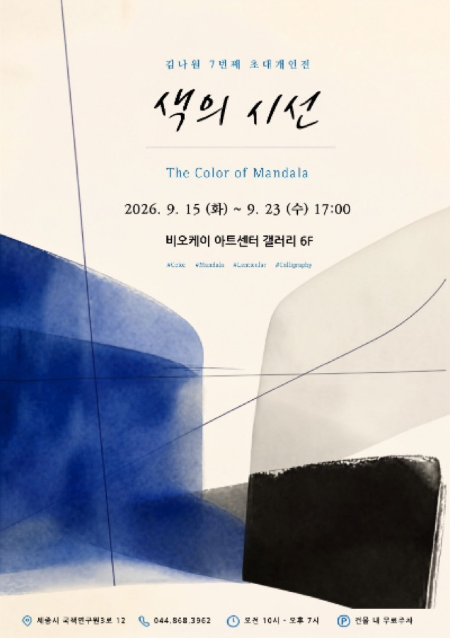
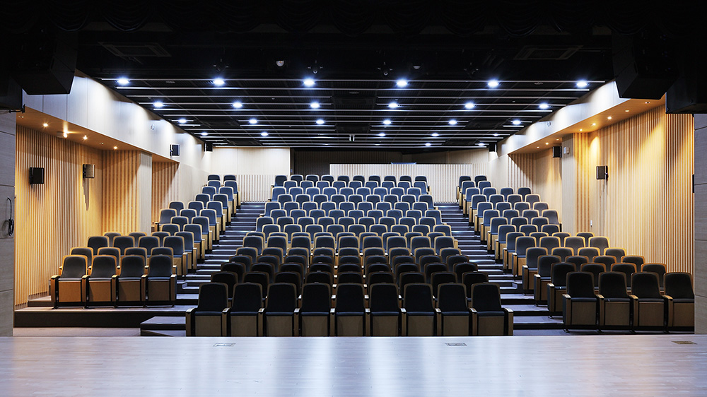

디자인 기준서 · v0.3 · 2026-09-18
디자인 기준서
시안 A(어두운 무대)의 규칙을 한 장으로 모았습니다. 새 페이지나 요소를 만들 때는 이 기준서의 값만 씁니다. 값을 바꿀 때는 여기부터 고칩니다.
원칙 다섯 가지
어둠 속 한 점의 빛바탕은 커튼 뒤의 따뜻한 검정, 글자는 크림색, 포인트는 금빛 호박색 하나. 빨강은 로고와 "예매중"에만 씁니다. 은은한 광원과 필름 입자로 무대의 공기를 만듭니다.
날짜가 먼저공연 정보에서는 날짜·요일·시각이 제목보다 크거나 앞에 옵니다. (롯데콘서트홀·금호아트홀 참고)
포스터는 손대지 않는다포스터 색은 그대로 두고, 공간·행사 사진에만 같은 톤 보정을 입힙니다.
PC와 모바일을 따로 설계한다코드는 한 벌이지만 배치는 1199px·899px에서 바뀝니다. 새 화면은 PC 배치와 모바일 배치를 둘 다 그립니다.
근거 없는 건 표시하지 않는다확인되지 않은 수치·문구·기능(360°, 음향 체험)은 "준비 중"으로 두고, 추정값은 화면에 추정이라고 적습니다.
색
바탕 3단계, 글자 3단계, 포인트 1개, 경고 1개. 아래 대비값은 이 페이지가 열릴 때 계산합니다(WCAG 기준 본문 4.5 이상, 큰 글자 3 이상).
쓰임
--bg / --bg-2 / --bg-3페이지 바탕 / 카드·패널 / 눌린 요소·배지 바탕. 그 밖의 회색은 만들지 않습니다.
--ink / --ink-3 / --ink-2제목·본문 / 설명 문단 / 보조 정보·라벨. --ink-2는 12px 이하에서 쓰지 않습니다(대비 부족).
--wood포인트. 눈썹 제목(eyebrow), 링크 호버, 활성 상태, 주요 버튼(solid) 바탕, 초점 테두리.
--red로고의 BOK, "예매중" 배지, 필수 입력 표시(*). 그 외 금지.
--line · 면직선 구분선은 표와 목록 안에서만(#ffffff12). 섹션은 선이 아니라 여백과 빛이 스민 면(.panel)으로 나눕니다. 그림자는 포스터와 면에만.
글자
제목은 마루 부리(네이버, 상업 이용 무료·최대 굵기 700), 본문은 Pretendard(가변). 한글은 word-break:keep-all로 단어 단위로 줄을 바꿉니다.
display · 마루부리 700 · clamp(44, 7vw, 108) · 1.08 · -0.03em가까이에서 듣는 무대
h1 · 마루부리 700 · clamp(34, 4vw, 60) · 1.15희망일로 대관 문의
h2 · 마루부리 600 · clamp(28, 2.8vw, 42) · 1.2지금, 그리고 곧
날짜 큰 숫자 · 마루부리 700 · 44 / 3010.3 16
h3 · Pretendard 600 · 20~22 · 1.35할인 안내
카드 제목 · Pretendard 600 · 15~17 · 1.4 · 2줄 말줄임지브리와 사랑에 빠지다 : 지브리 영화음악 콘서트 2026 — 세종
본문 · Pretendard 400 · 16 · 1.6220석 공연장과 146㎡ 갤러리. 세종의 공연·전시·아카데미가 한 건물에서 열립니다.
보조 · Pretendard 400 · 13~14 · --ink-2공연 · 공연장 · 10.3 토
눈썹 · Pretendard 400 · 12 · 0.22em · 대문자 · --woodNow & Next
규칙
제목 줄 수display·h1은 2줄 이내. 카드 제목은 2줄에서 말줄임, 일정 행은 1줄.
영문 눈썹섹션마다 짧은 영문 눈썹 한 줄을 둡니다. 장식이며, 정보는 반드시 한글 제목에 있습니다.
숫자날짜·제원 숫자는 마루 부리, 표 안의 숫자는 Pretendard(
tnum)로 자릿수를 맞춥니다.최소 크기본문 16px, 보조 13px, 라벨 12px 미만 금지. 모바일에서도 같습니다.
여백·격자
기본 단위 4px. 자주 쓰는 단계만 씁니다.
8
16
24
40
56
88
격자
최대 폭 · 좌우 여백1440px · PC 48px / 모바일 20px
섹션 간격PC 88px / 모바일 56~64px. 섹션 안 제목과 내용 사이 24~28px.
분기점1199px 이하 태블릿(2단), 899px 이하 모바일(1단). PC는 1280~1600px에서 먼저 확인합니다.
포스터 열PC 6열(간격 24) / 태블릿 4열 / 모바일 2.2열(가로 스크롤, 62vw 카드 1.6열은 홈에서만)
모서리2px. 배지·칩만 완전한 원(99px). 카드에 큰 둥근 모서리를 쓰지 않습니다.
구성 요소
site.css에 있는 것만 씁니다. 새 요소가 필요하면 여기에 먼저 추가합니다.
버튼
규칙한 화면에 solid는 하나. 외부 예매만 빨강. 높이 48(작은 것 40), 터치 영역 44px 이상. 예매 버튼 이름에는 예매처 이름을 넣습니다.
배지·라벨
예매중전시중무료예정매진종료공연클래식기획대관
상태 배지포스터 왼쪽 위. 색이 있는 것은 예매중(빨강)·전시중(호박)·무료(밝음) 셋뿐. 나머지는 회색.
기획·대관 라벨포스터 오른쪽 위. 기획만 호박색 테두리로 강조합니다.
포스터 카드

예매중지브리와 사랑에 빠지다 : 지브리 영화음악 콘서트 2026 — 세종
10.3 토

전시중김나원 초대개인전 — 색의 시선
9.15 화 – 9.23 수
글 순서배지 → (포스터) → 유형·장소 → 제목(2줄) → 날짜. 순서를 바꾸지 않습니다.
일정 행 · 날짜 띠
1목2금4일5월7수8목11일12월13화14수
6화부터
전시 · 갤러리 · 10.6 화 – 10.11 일
매곡 최수룡 개인전 — 얼씨구좋다 書畵야놀자
예정 →
규칙띠는 행사 있는 날만 활성(점 표시). 누르면 목록이 걸러지고 다시 누르면 풀립니다. 기간 행사는 기간 전체를 활성으로.
입력 · 접이식
유의사항
내용
취소·환불 안내
내용
규칙입력창 높이 50, 초점은 호박색 테두리와 3px 번짐. 필수는 빨간 별표. 오류 문구는 입력창 바로 아래.
모션
움직임은 행동을 돕는 곳에만. prefers-reduced-motion이 켜져 있으면 모두 끕니다.
200ms호버·초점·배지 색 변화
350ms이미지 전환(위치 뷰어), 탭 전환
600ms · cubic-bezier(.2,.7,.2,1)포스터 호버 확대(1.04)
700~800ms스크롤 등장(.rv): 14px 위로 이동하며 나타남. 첫 화면 요소에는 쓰지 않습니다.
금지자동 재생 슬라이드, 시차 스크롤(패럴랙스), 3D·움직이는 배경. 음파 애니메이션은 음향 카드 한 곳만.
사진
공간·행사 사진은 같은 톤으로 맞추고, 포스터는 그대로 둡니다.

어두운 덮개사진 위 글자는 아래→위 그라데이션(투명→--bg)으로 받칩니다. 글자 아래 밝기가 충분해질 때까지만.
해상도첫 화면 사진은 가로 2400px 이상, 카드 사진 1200px, 포스터 900px. 현재 공연장 사진(1000px)은 교체 대상.
대체 텍스트공간 사진은 "어디에서 본 무엇"을, 포스터는 "○○ 포스터"를 적습니다. 장식 이미지는 빈 alt.
상태 규칙
사용자에게 보이는 상태는 자동으로 계산합니다. 직원이 직접 누르는 값은 "매진"과 "취소·연기"뿐입니다.
1 취소·연기수동 지정. 배지 회색, 제목 옆 표시.
2 종료종료일이 지나면 자동. 지난 프로그램으로 이동, 예매 버튼 제거.
3 매진수동 지정. 예매 버튼은 남기되 "매진"으로 표기.
4 예매중 · 접수중 · 전시중접수 시작일이 지났고 링크가 있으면 예매중, 교육은 접수중, 전시 기간 중이면 전시중. 무료 관람은 "무료".
5 예정그 밖의 미래 행사.
접근성 점검
페이지를 내보내기 전에 확인합니다.
- 키보드만으로 메뉴 → 본문 → 버튼 순서로 이동되고, 초점 테두리가 보인다.
- 본문 대비 4.5:1 이상, 큰 글자·배지 3:1 이상 (위 색 표에서 확인).
- 모든 이미지에 alt, 아이콘 버튼에 aria-label, 필터 버튼에 aria-pressed.
- 터치 영역 44px 이상. 모바일에서 가로 스크롤이 생기지 않는다.
- 동작 줄이기 설정에서 애니메이션이 꺼진다.
- 폼: 라벨 연결, 필수 표시, 오류는 글로 표시.